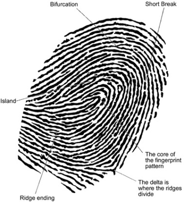

The positive identification of a fingerprint is not determined solely by its pattern, but also by careful analysis of points within the pattern called ridge characteristics or minutiae. An average fingerprint has more than 100 unique ridge characteristics or minutiae. Identification of between 8 and 16 ridge characteristics within a fingerprint is used to match a fingerprint to a suspect. The fingerprint below has several ridge characteristics identified.

No two fingerprint patterns are identical. Most identical or monozygotic twins have similar fingerprint patterns; however, differences are found in the individual minutiae within these patterns.
Every person has the same fingerprint patterns since birth. The only difference between a child's print and an adult print is that the fingerprint ridges of a child are closer together.
The first homicide case using fingerprint evidence occurred in 1892 in Buenos Aries, Argentina. A woman reported that she had been attacked and her two children had been murdered. The woman said she knew her attacker; he was a man who worked on a ranch near her home. The accused male suspect denied any involvement in the crime. None of the fingerprints found in blood on a door at the crime scene matched the suspect's prints. When fingerprints of the woman were taken, they matched the prints found on the door. When confronted with this evidence, the woman confessed to killing her children. She was found guilty and sentenced to life imprisonment.
The first homicide case in Europe incorporating fingerprint evidence occurred in 1905 in England. A man was found stabbed to death in his paint shop while his wife was found barely alive in the adjoining apartment. (She died later in hospital.) Two masks were found at the crime scene and an unknown fingerprint was found on a cash box. A witness saw two men leave the store; this led police to arrest two brothers - Albert and Alfred Stratton. The fingerprint on the cash box was found to match Albert Stratton's thumbprint. Both brothers were found guilty of robbery and murder and sentenced to death by hanging.
The first homicide case in North America involving fingerprint evidence was the murder trial of Thomas Jennings in 1910. Clarence Hiller, a husband and father of four children, awakened one night and found an unknown man in the hallway of his home. As he tried to stop the man, he was shot and killed. Near the window the killer used to enter the house, two railings had been painted by Mr. Hiller earlier in the day. The four fingerprints left behind in this fresh paint matched Jennings, a convicted burglar. This evidence led a jury to find him guilty of murder, and he was sentenced to death by hanging.